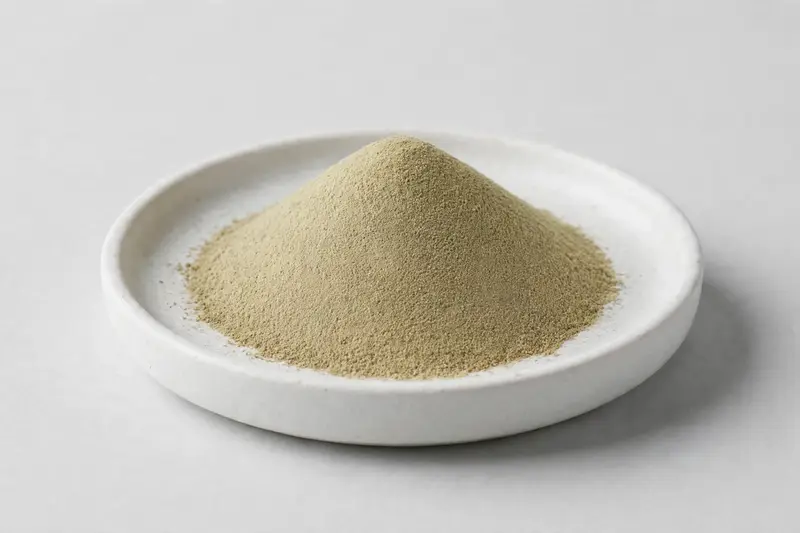

Lavender Extract — a flower-derived extract for calm and sleep-quality oriented supplement, tea and cosmetic formulations.

Overview
Lavender extract is produced from Lavandula angustifolia flower and is a familiar ingredient in calm, relaxation and sleep-quality categories, as well as in teas and personal care. Buyers request it in both standardized and ratio-based forms. As a Xi'an-based trading company, we source through vetted partner producers and confirm marker, carrier and organoleptic expectations before committing to supply.
Specifications below reflect commonly requested options in the market — not a stock list. Share your target spec and we'll confirm exactly what we can supply, honestly.
| Specification | Details |
|---|---|
| Botanical identity | Lavender extract powder from Lavandula angustifolia flower |
| Marker compound | Commonly requested spec grades: 4:1 to 10:1 extract ratios, plus luteolin or rosmarinic acid standardized grades; essential-oil-bearing versions also traded |
| Appearance | Fine powder, color typical of the extract |
| Mesh size | Typically 80–100 mesh (confirm per inquiry) |
| Testing | COA/TDS arranged on request; scope agreed per your spec |
Applications
Documentation
We don't claim in-house labs or certifications we don't hold. COA and TDS documents can be arranged on request, and testing scope is agreed against your specification before supply.
FAQ
Related products
Morus alba
Key marker: DNJ 1%
View specs →Citrus aurantium
Key marker: Synephrine 6-10%
View specs →Sodium hyaluronate (fermentation-derived)
Key marker: Cosmetic & food grades
View specs →Pueraria lobata
Key marker: Puerarin 40-98%
View specs →Gynostemma pentaphyllum
Key marker: Gypenosides 80-98%
View specs →Send your target spec and volumes — we'll respond with a tailored quotation.
Request a Quote